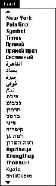
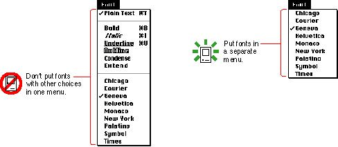

|
The Font MenuThe Font menu provides choices of text fonts for users. A font is a set of typographical characters created with a consistent design. All the characters in a font share features such as the thickness of horizontal and vertical lines, the degree and position of curves, and the presence or absence of serifs. Serifs are fine lines added to the main strokes of a letter. The characters in a font can appear in many different point sizes, but all have the same general appearance, regardless of size.Your application can include a Font menu if you support text in your application. Not all applications need a Font menu, but all word processors should include a Font menu. Display the names of all available fonts (those residing in the user's System Folder) in your application's Font menu. Fonts appear in the Font menu in alphabetical order, grouped by script system when more than one script is installed. When the script system is installed, the font name of an international font appears in its corresponding script when it is localized. Users install fonts by dragging the font icon to the System Folder icon. Figure 4-83 shows an example of a Font menu.  Indicate which font is currently in effect using a checkmark. As described in the section "Checkmarks and Dashes in Menus," which begins on page 57, use dashes to indicate when more than one font applies to the current selection. Many people have a very large set of fonts, so the font list should never be included with other items in one menu. Your application needs to have a Font menu and separate menus to accommodate lists of attributes such as style and size choices. Figure 4-84 shows why it's not a good idea to try to group the Font menu with other text-related menus. Figure 4-84 Don't combine the Font menu with other menus  For more information on font considerations, see the section "Worldwide Compatibility" on page 16 in Chapter 2, "General Design Considerations." |